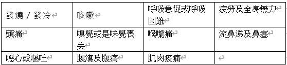
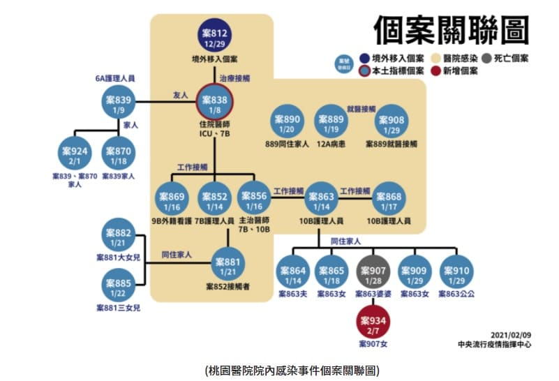

武漢肺炎在台灣發展史大紀錄及對社會的影響

甚麼是武漢肺炎(COVID-19)
原由: 2019年12月1日 由SARS-CoV-2引起的嚴重特殊傳染性肺炎(COVID-19)
引發全球大流行疫情 首次發現在湖北省武漢市
參考連結:2019冠状病毒病疫情
症狀:

參考連結:11大新冠肺炎症狀一次看
後遺症:
根據權威期刊（The Lancet）發現1700從新冠肺炎痊癒的人
有76%的人至少出現一種後遺症 並持續6個月
最常見的症狀包刮疲倦、肌肉無力、睡眠障礙、焦慮和沮喪
參考連結:新冠肺炎痊癒近8成有嚴重後遺症
武漢肺炎發展史(在台灣)
以下是由衛生署發文時間及事件說明
2020-03-01
鑽石公主號返台旅客1人確診
2020-03-14
武漢包機返台361人採檢皆陰性,仍須檢疫隔離
2020-03-20
全球旅遊疫情升至第三級警告 國人避免所有非必要之出國旅遊
2020-03-22
全面禁止旅客登機來台轉機
2020-03-25
避免群聚感染 建議停辦室內100人以上、室外500人以上集會活動
2020-04-01
為加強COVID-19(武漢肺炎)監測 指揮中心修訂嚴重 特殊傳染性肺炎病例定義
並擴大社區監測採檢對象 並公布社交距離注意事項
2020-04-11
我國通報世界衛生組織(WHO)電郵內容事實陳述之聲明
以電郵向WHO聲明武漢肺炎有人傳人的可能
2020-04-21
敦睦艦隊爆發 新增3例確診 均為敦睦艦隊實習生及軍人
2020-05-28
兼顧個資保護與疫調需求 指揮中心公布「實聯制措施指引」
2020-06-02
國內疫情趨緩 口罩國家隊助內也援外
ps: 1月31日採行口罩徵用政策至5月日產量從271萬片到2000萬片
自6月1號起每日徵用800萬片其餘開方內銷或外銷
2020-06-07
記錄每個關鍵時刻！「COVID-19臺灣防疫關鍵決策網」上線
參考連結:防疫關鍵決策網
2020-06-17
6月22日起短期商務人士入境 可有條件申請縮短居家檢疫時間
2020-06-24
1. 台美日澳合辦線上工作坊 交流武漢肺炎防治 部署防範第二波疫情威脅
ps: 我國與美國、日本及澳洲於6月24日在「全球合作暨訓練架構(GCTF)」合作模式下
舉辦「新型冠狀病毒：防範第二波疫情」線上工作坊
2. 外來人士逐步開放入境 旅客應於登機前出示COVID-19陰性檢驗報告
並配合入境後居家檢疫14天
2020-08-06
入境者居家檢疫為阻絕疫情進入社區最有效策略 目前無實施普篩必要
參考連結:無實施普篩必要
2020-08-20
國光生物科技股份有限公司 COVID-19 候選疫苗之第一期臨床試驗計畫已補齊技術性資料
經審核同意計畫進行施打受試者
2020-08-26
出入八大類人潮擁擠或密閉場所時務必佩戴口罩
必要時將由地方政府及各目的事業主管機關依法公告罰則予以裁罰
ps: 八大類場所: 醫療照護機構、大眾運輸、賣場市集、教育學習場所、展演競賽場所
、宗教場所、娛樂場所及大型活動
2020-09-09
入境配合落實14天居家檢疫及7天自主健康管理 才能有效防範社區傳播
2020-10-05
10月5日公費流感疫苗開打 守護我們所愛的人
2020-11-03
指揮中心就東洋公司洽談COVID-19疫苗乙事說明
ps:東洋藥品工業股份公司與疾管署洽談德國BioNTech COVID-19疫苗乙事
疾管署多次口頭及書面請該公司提出原廠正式授權文件及合約草案
以作為後續洽商之依據及具體標的 惟尚未獲該公司回復
2020-11-18
11月20日起印尼籍移工入境採集中檢疫 暫緩4家印尼人力仲介公司仲介移工來臺
ps:為維護國內防疫安全及減少印尼籍移工境外移入病例持續發生並暫緩
PT. SENTOSA KARYA ADITAMA等4家印尼外國人力仲介公司 仲介移工來臺工作
2020-11-30
11月30日起新增暫緩6家印尼外國人力仲介公司仲介
ps:新增暫緩
*「PT. ARNI FAMILY」
*「PT. BRATA KARYA INDONESIA」
*「PT. CITRA PUTRA INDARAB」
*「PT. DEWI PENGAYOM BANGSA」
*「PT. MULIA LAKSANA SEJAHTERA」
*「PT. PELITA KARYA JUHARI」
2020-12-16
我國持續暫停引進印尼籍移工 視當地疫情重新開放
2020-12-30
1.指揮中心洽購近2,000萬劑COVID-19疫苗 預期最早可能供貨時程為110年3月
ps:指揮中心洽購之COVID-19疫苗總計近2,000萬劑 包含COVAX約476萬劑、
AstraZeneca疫苗1000萬劑及另一家洽談中 預期最早可能供貨時程為110年3月
2.國內疫苗洽談
ps:
* 國光公司：從一期臨床試驗結果 無法決定最適劑量 建議重新執行劑量探索臨床試驗
* 高端公司：有條件核准第二期臨床試驗計畫之執行
* 聯亞生技公司：預期110年1月可提供第一期完整試驗數據 再續行審查
2021-01-27
北北桃地區所轄醫院即日起除例外情形 停止開放探病 陪病者仍為1人
2021-02-04
COVAX公布第一批COVID-19疫苗配送數量 我國亦將獲配
2021-02-10
指揮中心已與美國Moderna公司簽署505萬劑COVID-19疫苗供應合約
2021-02-23
國內外攏ㄟ通！1922疫情通報及諮詢專線 24小時不打烊
2021-03-03
首批AstraZeneca COVID-19疫苗抵臺
ps:首批AZ疫苗11.7萬劑 已於上午10點21分由韓國(大韓航空KE691班機)
抵達桃園機場
2021-03-17
指揮中心宣布開放臺帛旅遊泡泡 需符合防疫五大原則
ps:
* 團進團出 不可安排個人行程
* 規劃行程以避開人潮或劃定區域與當地住民區隔為原則
預先選定適當停留地點、旅遊路線
* 採全程定點接駁 接駁交通工具應每日加強清潔消毒
* 旅客僅限入住取得帛琉當地衛生單位認可具「安全防疫相關認證」旅館
* 餐廳用餐需有專屬用餐區及適當分流 妥為規劃入出動線及座位安排
維持適度社交距離
2021-03-19
AstraZeneca COVID-19疫苗訂於3月22日起開打
2021-03-31
4月6日起 開放執業登記醫事人員、醫療院所非醫事人員等
接種計畫第一類實施對象接種COVID-19疫苗
2021-04-21
Taiwan V-Watch系統註冊踴躍 提醒民眾按時填寫健康回報
2021-05-13
新增13例本土COVID-19病例 9例與案1203相關 4例與萬華茶藝館群聚相關
2021-05-19
1. 第二批COVAX獲配之AstraZeneca COVID-19疫苗即將抵臺
ps:我國透過COVAX獲配的第二批AstraZeneca疫苗41.04萬劑
將於今日下午運達桃園國際機場
2. 因應本土疫情持續嚴峻 指揮中心自即日起至5月28日止提升全國疫情警戒至第三級
各地同步加嚴、加大防疫限制 嚴守社區防線
2021-05-27
Moderna首批疫苗15萬劑將於5月28日下午抵臺
ps:首批Moderna疫苗15萬劑 將於臺灣時間5月28日凌晨自盧森堡啟運
預定於明(28)日下午3時50分抵達桃園國際機場
2021-05-29
我國疫苗政策兩大原則：由中央政府與原廠簽約採購並統籌分配執行
2021-05-30
1.全國社區篩檢站設置補助上路 提高民眾採檢可近性
2.守護國人健康 指揮中心全力供應防疫物資 並自6月1日起公開物資撥配資料供各界查詢
ps:自今(2021)年5月3日至5月27日期間 已撥配一般醫用/外科口罩4508餘萬片、N95口罩
240萬餘個、隔離衣161萬件、防護衣約27萬餘件，共計逾4900萬個/件。
2021-06-02
專家會議決議持續推行AstraZeneca COVID-19疫苗接種作業
並確實執行疫苗接種不良事件監測作業
2021-06-04
日本政府提供124萬劑AstraZeneca COVID-19疫苗將於今(4)日下午抵臺
2021-06-05
1. 苗栗縣2家電子廠發生群聚感染案件 前進指揮所已立即啟動相關防疫措施 避免感染擴大
2. 指揮中心：政府已於特別預算編列40億 請合約醫療院所免費提供民眾接種
公費COVID-19疫苗服務 自6月7日起實施
2021-06-18 1. Moderna疫苗24萬劑將於今(18)日下午抵臺
2. 指揮中心持續監測疫苗接種後不良事件 並提醒高齡年長者接種疫苗之注意事項
ps:
* 對於近期身體具狀況或慢性病情不穩定者 建議身體狀況較穩定後再接種
* 近期天氣炎熱 考量長者身體狀況 建議避開高溫時段前往接種
* 現有開放診所及衛生所可接種疫苗 建議就近前往接種
2021-06-22
因應印度變種病毒蔓延 居家檢疫及居家隔離期滿者均須進行PCR檢測 以維護國內社區安全
2021-06-23
因應臺北農產運銷公司群聚感染事件 指揮中心啟動「市場專案」強化相關防疫作為
參考連結:「市場專案」強化相關防疫作為
武漢肺炎重大事件紀錄
1.敦睦艦隊 磐石艦染疫
36名官兵確診 3/4第一例發病感染源不明 推測三月時已有零星社區感染個案
造成在艦隊上人傳人的群聚染疫
改善:國軍防疫提供六項建議措施
* 依任務、性質及工作環境等屬性 依疫情狀況分級規劃應變處置
* 於軍艦配置即時診斷設備 或建立急件送驗機制 協助鑑別診斷
* 建立獨立雙軌回復機制 強化疫情回報與資訊傳送
* 接種重要疫苗(如：流感疫苗、MMR疫苗等) 提升整體防疫效能
* 建立內部網絡機制以簡化行政流程 並強化健康監測
* 精進標準作業流程 確認文件內容一致性
2.網紅阿滴給WHO的一封信 要求世衛讓台灣加入
阿滴的初衷是有感於世界各國為台灣發聲
希望台灣也可以成為WHO的會員國跟世界一起對抗疫情而拍的影片
同樣的也提升了台灣在世界的能見度
3.外籍移工 境外移入確診暴增
因應印尼移工武漢肺炎境外移入個案暴增 且移工管理狀況不佳
中央流行疫情指揮中心在12月4日暫停部分印尼仲介公司引進外籍移工
4.衛福部桃園醫院事件
感染源為案812外籍移工入院引起群聚感染事件
桃園醫院在110年1月11日發生首位醫師確診感染COVID-19
整起院內感染群聚事件至同年2月23日最後一位接觸者解除隔離為止
歷時44天，共確診21名本土個案，包括2位醫師、4衛護理師、2位病人、12位家屬、1位外籍看護

5.諾富特飯店混居
諾富特是一個酒店品牌 為雅高集團旗下品牌 目前台灣由中華航空代理
諾富特在60個國家和地區有近400家酒店和度假村 大部分坐落在城市的商業區和名勝風景附近
群聚感染事件:
2021年5月8日 台北諾富特華航桃園機場飯店違反中央流行疫情指揮中心命令
身為非防疫旅宿而接收住居家檢疫者及居家隔離者
若干華航機師於飯店內爆發感染疫情並導致31人確診
終因造成防疫破口而遭桃園市政府重罰126萬6,000元
武漢肺炎對社會的影響
由於目前全國疫情升溫為防堵疫情擴散中央政府將全國列入三級警戒
三級警戒規定:
全國防疫因應措施
1.休閒娛樂場所應關閉:歌廳、舞廳、夜總會、俱樂部、酒家、酒吧、酒店、夜市
、視聽場所(KTV) 、指壓按摩場所、健身休閒中心(含提供指壓、三溫暖等設施之美容瘦身場所)
、保齡球館、撞球館、健身中心(含國民運動中心) 、室內螢幕式高爾夫練習場、遊藝場所
、電子遊戲場、資訊休閒場所、休閒麻將館及其他類似場所
2.全國宗教祭祀場所活動部分 全部停止進香團與繞境相關活動 包括寺院、宮廟、教堂(教會)
及其他類似場所之活動 應落實實聯制與社交距離 並加強清消
3.全國學校停止到學校上課 採用遠距教學
4.全國社團停止交接活動
9大防疫指引
1.外出時必須配戴口罩
2.避免不必要的移動、活動或集會
3.停止室內5人、室外10人以上的家庭聚會和社交聚會
4.自我健康監測(有症狀應就醫)
5.營業場所及洽公機關:落實人流管制、戴口罩、保持社交距離
6.職業及工作處所:遵守企業持續營運指引之防疫規定 落實個人及工作場所衛生管理
啟動企業持續營運因應措施(如異地、遠距辦公、彈性時間上班)
7.餐飲場所:應落實實聯制 一律採用外帶
8.婚、喪禮:應落實實聯制、社交距離並加強清消
9.公共場域、大眾運輸加強清消
由三級警戒探討對社會的影響
1.相關行業被勒令停止營業 上述所說的休閒娛樂場所停止營業算嚴重影響人民生計
導致政府須針對停止營業的產業提出相關紓困方案
否則疫情過後或許嚴重的產業將面臨消失的窘境
2.因應餐飲業目前只能外帶的狀況導致高消費的餐廳面臨持續虧損情況
雖然轉型為外帶但只能減少虧損情況
3.因疫情所影響電商平台業績上揚 近而導致物流業相較於疫情前訂單勝於以往
4.疫情影響導致熱鬧的街頭夜市 現在冷清許多 店家經不起持續的虧損
紛紛停止營業竟而發現出租店面看板琳朗滿目
結論
武漢肺炎真的對台灣社會經濟影響蠻大的 尤其是被勒令停業的休閒產業
還是必須想辦法轉型在疫情期間謀求生存 也希望這次疫情可以早點回復三級警戒前的生活
畢竟三級警戒對個人生活也影響甚遠 目前是連想去健身房或是外出透透氣都是沒辦法的
只能希望大家一起努力做好防疫 早日恢復正常生活